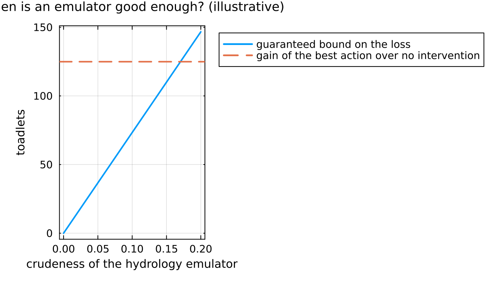

Replacing a submodel by an emulator
Simon Frost
- Motivation
- Two submodels
- Evaluation is compositional
- An emulator, and how far it is from the model
- Errors add up along the diagram
- Boxes only upstream of the count matter
- A transition matrix from a model package
- A certificate for a chain
- Summary
Motivation
A model used for a decision is often two models in a row: one for the environment and one for the population that lives in it. The slow one gets replaced by a fast approximation, an emulator. How much can that cost the decision?
If each box of the diagram carries a statement of how far it is from the truth, the diagram answers: the errors add up along the diagram, and the expected count lost by deciding with the approximate diagram is at most twice the range of the count times their sum. This vignette builds the two-model diagram, swaps in emulators of increasing crudeness, and shows the guaranteed bound beside the loss that actually occurs.
All numbers are illustrative. Counts are of natterjack toadlets, and every result is compared with no intervention.
using CategoricalDecisionAnalysis
include(joinpath("..", "_common.jl"))Main.Notebook.voi_tableTwo submodels
The environment model turns spring rainfall into the state of the breeding ponds. The population model turns the state of the ponds, and what the manager does, into the number of toadlets.
rain = :rain => [:dry, :average, :wet]
ponds = :ponds => [:dried_out, :shallow, :deep]
action = :action => [:no_intervention, :deepen_ponds]
toadlets = :toadlets => [:none, :hundreds, :thousands]
# P(state of the ponds | rain), a hydrological model run to equilibrium
hydrology = [7//10 2//10 0; 3//10 6//10 3//10; 0 2//10 7//10]
# P(toadlets | action, state of the ponds)
recruitment = zeros(Rational{Int}, 3, 2, 3)
recruitment[:, 1, 1] = [9 // 10, 1 // 10, 0] # no intervention, dried out
recruitment[:, 1, 2] = [1 // 10, 5 // 10, 4 // 10] # no intervention, shallow
recruitment[:, 1, 3] = [2 // 10, 6 // 10, 2 // 10] # no intervention, deep (predators)
recruitment[:, 2, 1] = [2 // 10, 5 // 10, 3 // 10] # deepened, would have dried
recruitment[:, 2, 2] = [1 // 10, 6 // 10, 3 // 10] # deepened, shallow
recruitment[:, 2, 3] = [3 // 10, 6 // 10, 1 // 10] # deepened, deep
count = [0, 300, 1000]
function dune_system(hydrology, recruitment)
return decision_pipeline(belief_box(:forecast, rain, [1 // 2, 3 // 10, 1 // 5]),
channel_box(:hydrology, rain, ponds, hydrology),
policy_box(:manager, (), action),
consequence_box(:recruitment, (action, ponds), toadlets, recruitment),
utility_box(:toadlets_leaving, toadlets, count))
end
truth = dune_system(hydrology, recruitment)DecisionPipeline: 5 boxes, inputs Symbol[], outputs Symbol[]
belief forecast : I → rain
channel hydrology : rain → ponds
policy manager : I → action (open)
consequence recruitment : action ⊗ ponds → toadlets
utility toadlets_leaving : toadlets → ℝproblem = decision_problem(truth; baseline=:no_intervention)
(payoff=problem.payoff.Q, best=first_choice(decide(truth, MaxExpectedUtility())),
expected_gain_over_no_intervention=expected_gain_over_baseline(problem))(payoff = Rational{Int64}[186 412 431; 459 434 340], best = :deepen_ponds, expected_gain_over_no_intervention = Rational{Int64}[0, 1249//10])Evaluation is compositional
The diagram can be cut between the two submodels and each half evaluated alone. The value of the whole is then the composite of the values of the halves. This is what makes it safe to replace one half.
upstream = decision_pipeline(belief_box(:forecast, rain, [1 // 2, 3 // 10, 1 // 5]),
channel_box(:hydrology, rain, ponds, hydrology); outputs=[:ponds])
downstream = decision_pipeline(policy_box(:manager, (), action, :deepen_ponds),
consequence_box(:recruitment, (action, ponds), toadlets, recruitment),
utility_box(:toadlets_leaving, toadlets, count); inputs=[:ponds])
whole = evaluate(compose(upstream, downstream))
by_halves = compose(evaluate(upstream), evaluate(downstream))
(equal=whole == by_halves, expected_toadlets_if_deepened=only(whole.reward))(equal = true, expected_toadlets_if_deepened = 4277//10)evaluate returns the probability part and the expected count collected on the way, and both compose. The package does not claim the same for optimisation: the best policy of one half depends on what the other half does.
An emulator, and how far it is from the model
Suppose the hydrological model is too slow to run for every forecast and a regression on rainfall stands in for it. The distance between two models of the same process is the largest total-variation distance between their predictions, over the inputs.
hydrology_emulator = [69//100 1//5 1//50; 3//10 3//5 3//10; 1//100 1//5 17//25]
ε_hydrology = kernel_distance(hydrology, hydrology_emulator)1//50The emulator goes into the diagram in place of the model, with its error stated:
emulated = replace_box(truth, :hydrology, hydrology_emulator; error=ε_hydrology)DecisionPipeline: 5 boxes, inputs Symbol[], outputs Symbol[]
belief forecast : I → rain
channel hydrology : rain → ponds (error 1//50)
policy manager : I → action (open)
consequence recruitment : action ⊗ ponds → toadlets
utility toadlets_leaving : toadlets → ℝ(range_of_the_count=utility_range(emulated), total_error=total_error(emulated),
bound_on_toadlets_lost=fidelity_bound(emulated))(range_of_the_count = 1000, total_error = 1//50, bound_on_toadlets_lost = 40//1)The bound says: whatever action is best in the emulated diagram is at most this many toadlets worse, in the true diagram, than the action that is best there. The loss that actually occurs here:
function loss_from(approximate)
chosen = first_choice(decide(approximate, MaxExpectedUtility()))
return (chosen=chosen,
loss=act_now_value(truth) - pipeline_value(truth; policies=(:manager => chosen)))
end
loss_from(emulated)(chosen = :deepen_ponds, loss = 0//1)Errors add up along the diagram
Now emulate the population model as well. The stated errors of the two boxes add, and so does an error in the forecast.
crude(K, w) = (1 - w) .* K .+ w .* (ones(Rational{Int}, size(K)) .// size(K, 1)) # towards uniform
rows = map((0 // 1, 1 // 100, 1 // 50, 1 // 20, 1 // 10, 1 // 2)) do w
R = crude(recruitment, w)
H = crude(hydrology, w)
approx = replace_box(replace_box(truth, :hydrology, H; error=kernel_distance(hydrology, H)),
:recruitment, R; error=kernel_distance(recruitment, R))
l = loss_from(approx)
return [Float64(w), kernel_distance(hydrology, H), kernel_distance(recruitment, R),
total_error(approx), fidelity_bound(approx), l.loss, String(l.chosen)]
end
md_table(["crudeness", "error: hydrology", "error: recruitment", "sum", "guaranteed bound",
"actual loss", "action chosen"], collect(rows); digits=3)| crudeness | error: hydrology | error: recruitment | sum | guaranteed bound | actual loss | action chosen |
|---|---|---|---|---|---|---|
| 0 | 0 | 0 | 0 | 0 | 0 | deepen_ponds |
| 0.01 | 0.004 | 0.006 | 0.009 | 18.667 | 0 | deepen_ponds |
| 0.02 | 0.007 | 0.011 | 0.019 | 37.333 | 0 | deepen_ponds |
| 0.05 | 0.018 | 0.028 | 0.047 | 93.333 | 0 | deepen_ponds |
| 0.1 | 0.037 | 0.057 | 0.093 | 186.667 | 0 | deepen_ponds |
| 0.5 | 0.183 | 0.283 | 0.467 | 933.333 | 0 | deepen_ponds |
The bound is a guarantee and it is loose: it has to hold for every model within the stated errors, and most of them do not change the decision at all. It is useful in one direction. When it is small compared with the gain over no intervention, the emulator is good enough for this decision and no further checking is needed. When it is large, it says nothing, and the emulator has to be judged another way.
ws = (0:20) .// 100
bounds = [Float64(fidelity_bound(replace_box(truth, :hydrology, crude(hydrology, w);
error=kernel_distance(hydrology, crude(hydrology, w)))))
for w in ws]
gain = Float64(maximum(expected_gain_over_baseline(problem)))
plt = Plots.plot(Float64.(ws), bounds; label="guaranteed bound on the loss",
xlabel="crudeness of the hydrology emulator", ylabel="toadlets",
title="When is an emulator good enough? (illustrative)")
Plots.hline!(plt, [gain]; label="gain of the best action over no intervention", linestyle=:dash)
png_figure(plt)
Where the bound is below the dashed line, the choice made with the emulator is guaranteed to beat no intervention in the true model.
Why the errors add, and which distances do
The distance used here has two properties that make the read-off possible: putting two boxes in a row, or side by side, gives a composite whose error is at most the sum of the errors.
(in_a_row=kernel_distance(recruitment[:, 1, :] * hydrology, crude(recruitment, 1 // 5)[:, 1, :] *
crude(hydrology, 1 // 5)),
sum_of_the_parts=kernel_distance(recruitment[:, 1, :], crude(recruitment, 1 // 5)[:, 1, :]) +
kernel_distance(hydrology, crude(hydrology, 1 // 5)))(in_a_row = 401//3750, sum_of_the_parts = 14//75)The Jensen-Shannon distance has the same two properties and is offered as an alternative (divergence = :jensen_shannon). An emulator’s table must be a proper probability table: one whose columns do not sum to one is refused, because the bound is not proved for it.
Boxes only upstream of the count matter
An error in a box that feeds no utility changes no expected count, and is left out of the sum. box_provenance lists what does count.
with_logger_box = decision_pipeline(emulated,
channel_box(:data_logger, ponds, :logger => [:ok, :fault],
[9//10 9//10 9//10; 1//10 1//10 1//10];
error=1 // 4))
(boxes_that_count=[b.name for b in box_provenance(with_logger_box)],
total_error=total_error(with_logger_box))(boxes_that_count = [:forecast, :hydrology, :manager, :recruitment, :toadlets_leaving], total_error = 1//50)A transition matrix from a model package
Model packages usually store a Markov chain row by row. finite_kernel turns either convention into a kernel whose table a box can use. Here the ponds carry over from one year to the next.
carry_over = [7//10 3//10 0; 2//10 6//10 2//10; 0 3//10 7//10] # row-stochastic: from → to
next_year = :ponds_next_year => [:dried_out, :shallow, :deep]
step = finite_kernel(carry_over, ponds, next_year; orientation=:rows)
two_years = decision_pipeline(belief_box(:forecast, rain, [1 // 2, 3 // 10, 1 // 5]),
channel_box(:hydrology, rain, ponds, hydrology),
channel_box(:carry_over, ponds, next_year, step.table);
outputs=[:ponds_next_year])
vec(first(reward_matrices(evaluate(two_years))))3-element Vector{Rational{Int64}}:
73//200
417//1000
109//500A certificate for a chain
For a chain of boxes on one set of states the bound can be exported as a document that the Lean checker in proofs/ verifies: the exact and approximate tables, the stated errors, the range and the bound. The file is checked in exact arithmetic before it is written.
io = IOBuffer()
export_fidelity_chain_certificate(io, [carry_over', carry_over'],
[crude(carry_over', 1 // 10), crude(carry_over', 1 // 20)];
range=largest_action_range(problem))
print(String(take!(io))){
"schema": "fidelity-chain-certificate/1",
"boxes": [
{"exact": [["7/10", "1/5", "0"], ["3/10", "3/5", "3/10"], ["0", "1/5", "7/10"]],
"approx": [["199/300", "16/75", "1/30"], ["91/300", "43/75", "91/300"], ["1/30", "16/75", "199/300"]],
"error": "11/300"},
{"exact": [["7/10", "1/5", "0"], ["3/10", "3/5", "3/10"], ["0", "1/5", "7/10"]],
"approx": [["409/600", "31/150", "1/60"], ["181/600", "44/75", "181/600"], ["1/60", "31/150", "409/600"]],
"error": "11/600"}
],
"range": "245",
"bound": "539/20"
}Summary
Each box states its error; the diagram adds them and returns a bound on what the approximation can cost the decision. The bound and the distance are those of DecisionAnalysis (decision_loss_bound, total_variation); what the diagram adds is the bookkeeping: which boxes count, and that their errors add.